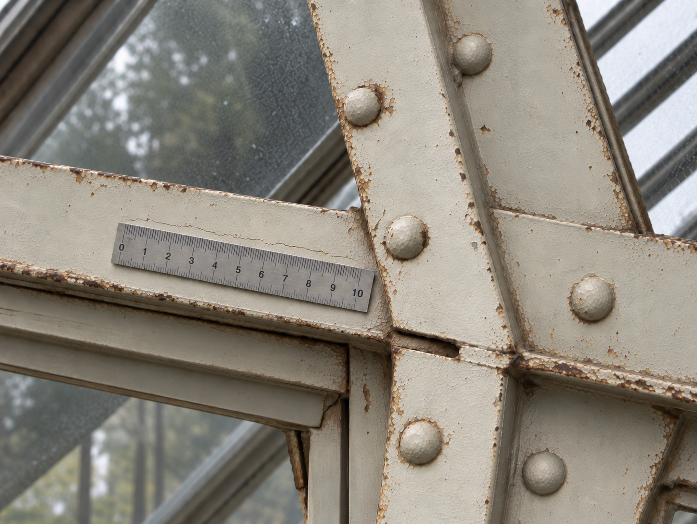
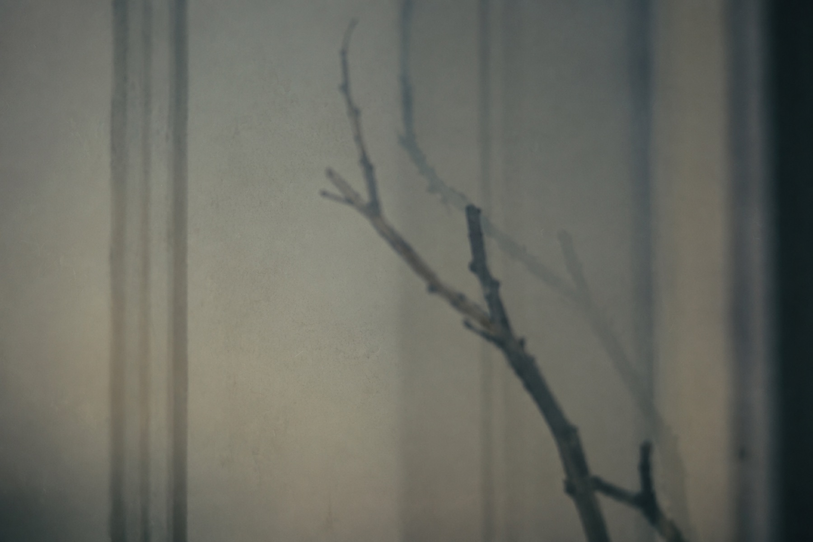

Nine tracks
Tracklist
Music forthcoming. The companion chapters are available now.
紫陽花Hydrangea
Music / forthcomingRead chapter蘭Orchid
Music / forthcomingRead chapter秋Autumn
Music / forthcomingRead chapter相移Phase Shift
Music / forthcomingRead chapterHibiscus / 虚像Hibiscus / Virtual Image
Music / forthcomingRead chapterLilium / 越冬Lilium / Overwintering
Music / forthcomingRead chapterOleander / 原形Oleander / Original Form
Music / forthcomingRead chapter
Remanence
Music / forthcomingRead chapter